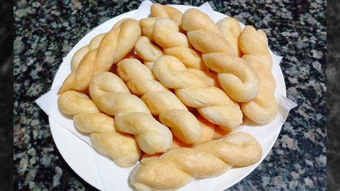

FILHÓS

O filhós é um quitute tradicional da culinária nordestina, muito apreciado por sua textura macia e sabor levemente adocicado. É um rolinho frito, geralmente feito com goma, leite, ovos e óleo, e pode ser encontrado em diversas festas e eventos da região.
Ingredientes
- 500 gramas de goma de tapioca
- 4 ovos
- 3 pitadas de sal
- 2 copos de leite
- 2 copos de óleo
Modo de Preparo
- Coloque o polvilho em uma tigela e reserve.
- Em uma panela coloque o óleo, o leite e o sal. Leve a panela ao fogo até ferver.
- Escalde a goma e deixe esfriar.
- Vá acrescentando os ovos e amassando até que fique boa pra enrolar.
- Enrole-os em forma de palito e frite em óleo morno.